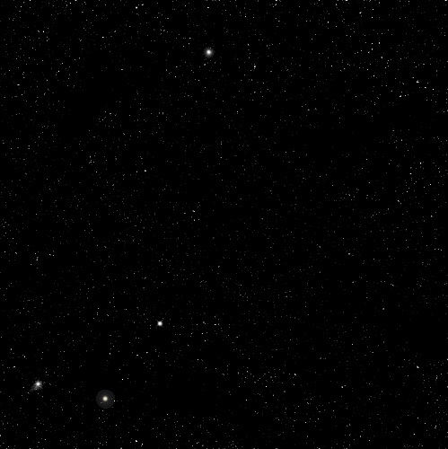

| PART II: The Space Scene | |
| Step 10: Star Field |
|
| PART II: The Space Scene | |
| Step 10: Star Field |
|
The first thing we need to create is a star field that will sit behind our planets, sun, asteroids, and other stuff in our image. We are actually going to create 4 different levels of stars to give our space scene a feeling of depth and make it look awesome.
|
Just a word of warning before we begin: |
FOLLOW THE DIRECTIONS BELOW CAREFULLY!
Right about now you may be wondering 'how do I take notes on what that button looks like?,' and that's actually a good question. You can do it any way you want, but an easy way is to draw a quick picture or simply describe where the button is at, such as 'on the Layers panel, second button from the right at the bottom.'
There are several different ways to zoom in Photopea. While Ctrl+1 sets the zoom level to 100%, Ctrl+0 sets the zoom level to whatever makes the entire image visible in the window. Additionally, you can use Ctrl++ (Ctrl and the + key) to increase the zoom level and Ctrl+- (Ctrl and the - key) to decrease the zoom level. You can also press and hold the Alt key and roll the mouse wheel up to zoom in and down to zoom out. Finally, you can click the Zoom tool and use the Plus and Minus options on the Zoom tool's options bar and click on your image to increase and decrease the zoom level respectively (you can also click and drag on your image to the right to zoom in and to the left to zoom out). Feel free to experiment with the various zoom methods until you find one that you like to use best.
Just a quick point here: don't be alarmed if Photopea reacts slowly while using the Add Noise filter. Remember that you are working with a piece of online software and when it does things like apply a random image filter such as Add Noise it may temporarily slow down. Be patient and give the software time to work.

When Photopea applies the Noise filter it generates a random noise pattern. In other words, everyone will have a different noise pattern and thus will have a unique layout of stars.
The 'stars' we are making are very sharp and crisp at this point, so let's soften them up a little to help them look like they are actually glowing balls of gas.
To turn this static into stars, we are going to use the Levels editor - yes, the same one we used when we turned our face blue - to remove most of the white and be left with a random spattering of dots which will be our stars.
|
By the way, if your histogram looks like
this... |
Notice that our stars are distributed fairly evenly around our image. In the real world, there are sections of the sky that appear to the naked eye to have no stars. Let's take a second and give our space scene a small section or two of emptiness.

We don't want to use a simple round brush to create our areas of empty space as it will be obvious that we have removed stars because there will be hard edges to our emptiness, so let's choose a more random brush.

DO NOT GO CRAZY WITH THIS!!
We just want to remove a few stars here and there. Look at the two images below...

Notice that you really have to look hard to notice where the areas of empty space are. If you look at the Far Stars layer's thumbnail image on the Layers panel (the red arrow in the image below) you can see exactly where you removed the stars because you will be able to see white spots...
This is what we want at this point - later we will be adding more stars and these few blank areas will become more noticeable.
Now that we've got some stars that appear dim and far away, let's create some average looking stars that appear to be a little closer to us. To pull this off we simply have to make a duplicate of our Far Stars layer and then break out our Eraser Tool again.
At this point, each layer is actually covering up every other layer. With multiple layers of stars, it would be great to have a way to see what is under a layer while still being able to see the contents of that layer. Lucky for us blending modes are a thing.
The Linear Dodge blending mode allows us to see through the black on the layer to what's underneath it. OK, to be totally honest here, Linear Dodge actually does more than make black see-through, but for what we are doing now, knowing that it allows us to see-through black is good enough. Notice that many of the stars are now brighter because we actually have two identical images on top of each other and they are complimenting each other to make the stars brighter. We now need to remove most of the stars from the Average Stars layer so that we have some dim stars that appear far away (now you know why we named the first layer Far Stars) and some brighter stars that seem closer (the Average Stars layer). A few directions from now we will get some stars that appear very near to us as well as some awesome bright stars.
Keep in mind that you don't have to remove stars from you Average Stars layer in the same patter as I did - try to be unique. As the direction above stated, you want to remove most of your Average Stars so that what's left will work with the Far Stars layer to give your star field some depth. If you leave too many Average Stars you end up with stars that all look the same. Your star field should now look something like this...
Note that your stars will NOT look exactly like mine
We have some pretty awesome looking far and average stars, so let's add in a few near stars to complete the sense of depth.
Notice that you have only a few stars that are slightly larger than those on the Far Stars and Average Stars layers...

This is good - this is what we want at this point.
We do have a slight issue at this point. Recall that we made a copy of our noise filled layer all the way back in direction 12, so at this point all of our layers have stars sitting in the exact same place. If we leave our star field like this we will simply be creating several really bright stars on top of other stars. Let's add some variety to our star field by adjusting the Near Stars layer so that we are not covering up other stars.
At first it may look like nothing happened because there are so few stars on the Near Stars layer, but turn the visibility of the Near Stars layer off and on and you will see the impact that it has. It is not making an enormous change, but by having these slightly brighter stars we have given our space scene some awesome depth.
You should have something similar to the image below...

You should notice that there are areas of dense stars and areas of fewer stars and that the areas of no stars are now more obvious. Feel free to remove more or less stars until you get something you like. Be careful though - once you remove stars it can be very difficult to get them back if you change your mind.
Now that our basic star field is ready to go, let's give it a sense of uniqueness and coolness by adding a few really bright stars.


You may be tempted to keep going and make a really, really big glowing star, but don't. If you make your star too large it will seem unnatural. Remember that we want realistic looking stars and not huge white blobs.
One way to get unique bright stars is to load brush sets with additional brushes into Photopea and use them to build uniquely shaped stars. Photopea includes just a few built-in brushes, so to get more you will need to download them. There are several sites that allow you to download additional brushes. Simply search the Internet for Photoshop brushes (both Photoshop and Photopea can load additional brushes with an abr file extension). Or you can use the links below to download all of Photoshop's legacy brushes (in other words, if you want some brushes that are not Adobe brushes, and there are literally thousands of them, you will have to search the Internet).
The bottom 2 links will download all of the brushes linked above them. These links allows you to download several hundred brushes, so be careful if you don't want to overload your brush list.
When choosing brushes to use for your bright stars, I recommend using patterned brushes such as S, star (NOT the 5-pointed star), Starburst, or any other brush shape that gives you a nice looking star (do not use Fuzzball, Flowing Stars, any of the leaf or grass brushes, or any other brush that looks unnatural).
If you are ahead with your work, take some time to look at several different brush sets to see if there are any brushes you would like to use (again, stay away from the brushes shaped like grass, leaves, 5-pointed stars, as well any that are square as there are no real stars in the sky shaped like these. Try to make your stars unique and something other than a perfect circle (feel free to add some color to your bright stars if you wish, but remember to keep it subtle).
To help you out with making some really unique starts, have a look at the image below...
The really cool stars in the middle column were created using the brushes in the left column, which can be found in the brush set indicated in the right column. Keep in mind two very important things as you create your bright stars:
Your stars need to look REALISTIC - take a look at the
stars below...

Notice that only the bright star on the right looks like a real star in space.
The other stars may be cute or adorable but they are not realistic
Add in three or four bright stars (if you add too many you will limit
where you can put the planets and stuff we will be adding later) -
DO NOT copy
the same star over and over (no two real stars look exactly alike) and DO NOT use the same brush multiple
times - this looks unnatural; make each star unique - here is a close-up of my four stars...

Notice that the stars are all unique, and that the third one from the left
has just a slight amount of yellow added to it (I know, they are awesome)
Let me say that one more time: DO NOT copy the same bright star multiple times
Be careful not to go crazy with how big you make your bright stars. Take a look at the image below...
Notice that it looks like a fake star when you compare it to the stars below - we are striving to make our image as realistic as possible.
Your star field should now be complete, and should look something like this (remember that your stars will be in different places than mine)...

Notice that my bright stars are not overly large and serve to add a nice accent to my star field. Notice also that all four of them do NOT look the same.
Before we continue creating our amazing space panorama, we need to put all of the star field layers into one folder group so that we can work with them all at the same time to do such things as turn off their visibility or rearrange them in the layer stack.
In the next Step we will give our space scene some color by adding in a nice nebula.
01 | 02 | 03 | 04 | 05 | 06 | 07 | 08 | 09 | 10 | 11 | 12 | 13 | 14 | 15 | 16 | 17 | 18 | 19 | 20